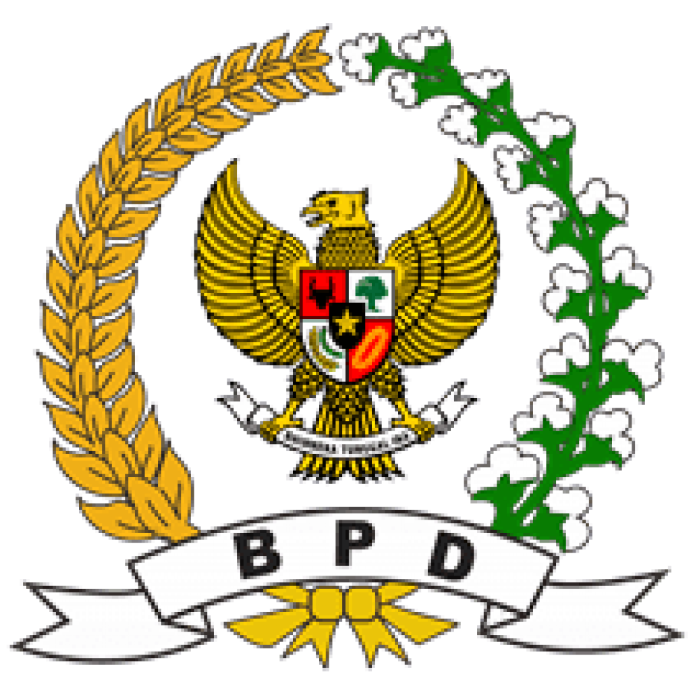

PKK Desa
PKK Desa adalah organisasi yang berfokus pada pemberdayaan perempuan dan kesejahteraan keluarga di desa.

Karang Taruna
Karang Taruna merupakan wadah organisasi kepemudaan yang bergerak dalam bidang sosial, budaya, dan kepemimpinan.

BPD
Badan Permusyawaratan Desa (BPD) berperan sebagai lembaga legislatif desa yang mengawasi jalannya pemerintahan desa.